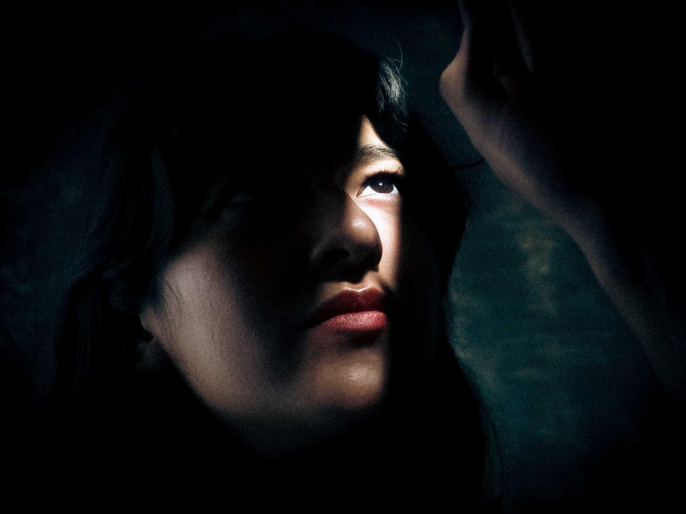
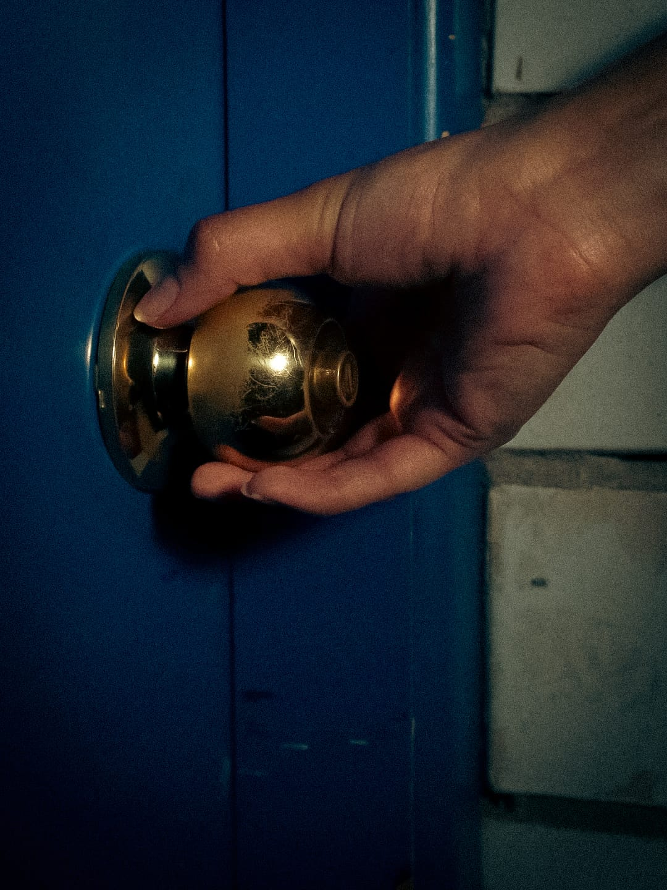
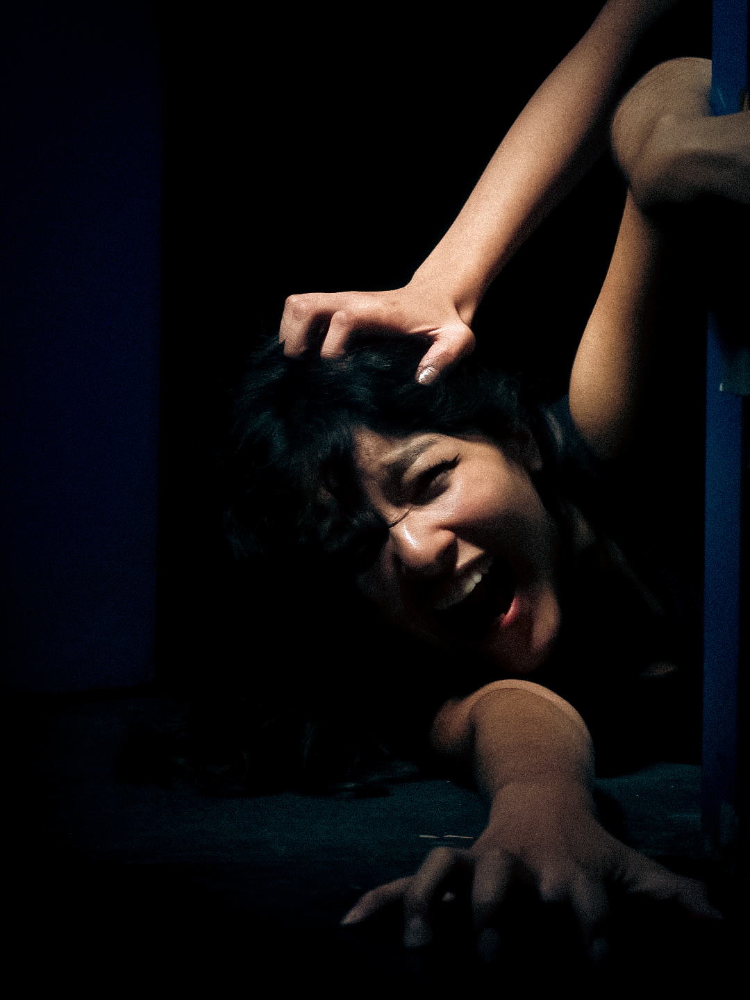
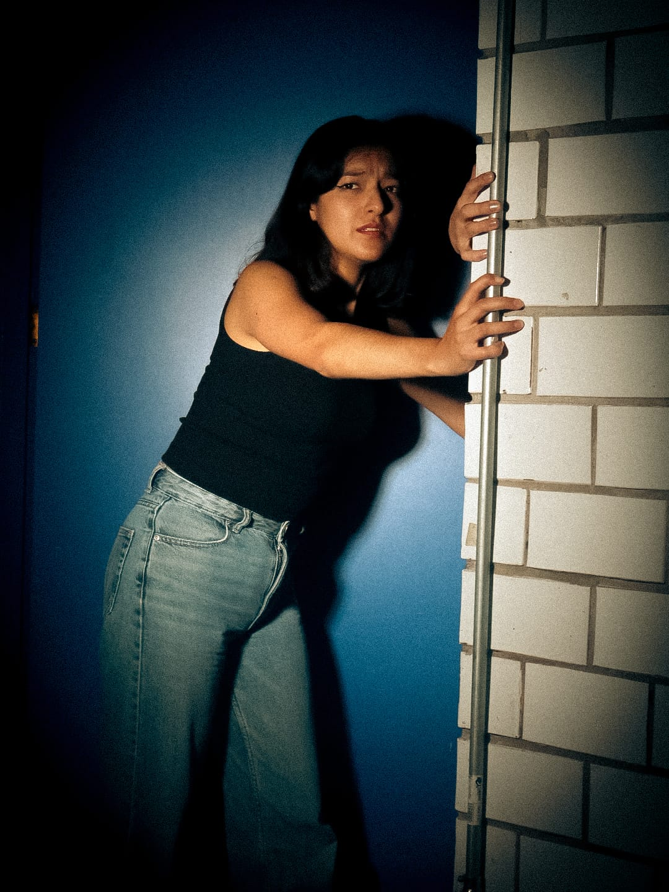

28 DE OCTUBRE DE 2026
El viento soplaba frío esa noche. Las sombras parecían moverse por voluntad propia en las esquinas de la habitación, devorando la poca luz que lograba entrar por la ventana.

No había nadie más en la casa, pero al levantar la vista, la composición de las sombras en el pasillo formaba una silueta que me observaba fijamente. El silencio era absoluto, tan pesado que lastimaba los oídos.

Di un paso hacia atrás, intentando convencerme de que solo era una ilusión óptica, un truco de mi mente cansada. Pero entonces, la figura se desplazó lentamente hacia el umbral de la puerta.

Cerré los ojos, esperando despertar. Al abrirlos, la oscuridad lo había consumido todo, y lo único que quedó fue el eco de un susurro justo detrás de mí.
